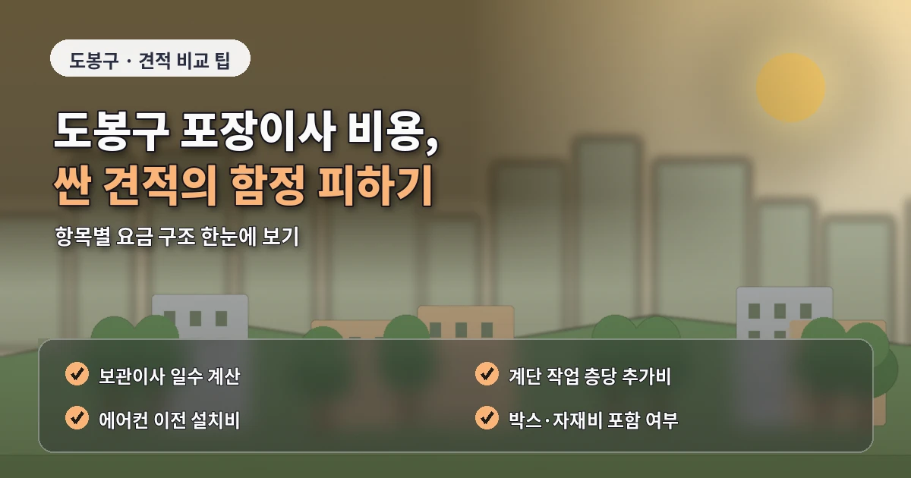
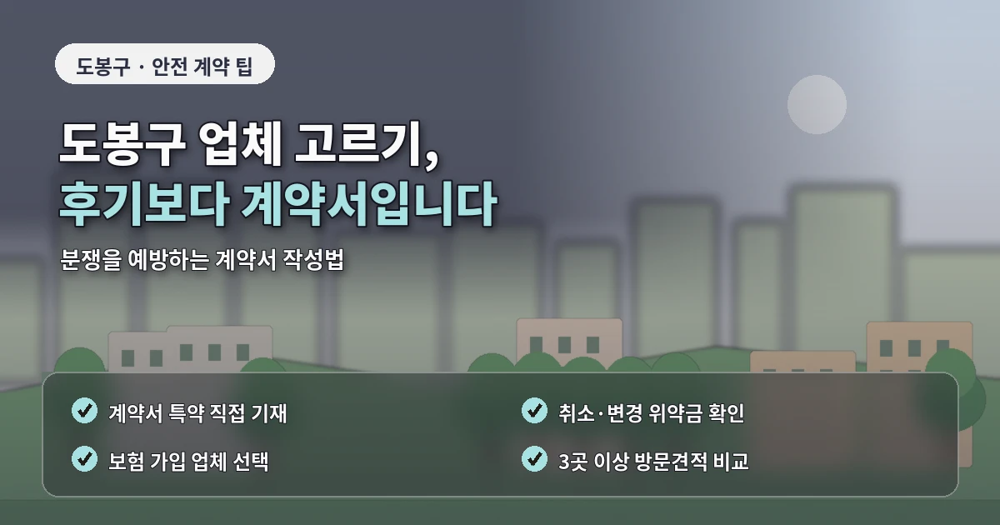

서울 도봉구포장이사추천 견적 전 필수체크
도봉구 포장이사를 준비할 때는
아파트와 빌라가 섞인 지역 특성을
먼저 이해하는 것이 좋습니다.
창동은 아파트와 역세권 주거가 많고,
방학동과 쌍문동은 빌라와 다세대주택,
도봉동은 주택가와 아파트가 함께 있습니다.
이처럼 주거 형태가 다양하면
포장이사 비용도 단순 평수만으로
정확히 판단하기 어렵습니다.
비용과 견적이 달라지는 핵심 기준
도봉구 포장이사 견적에서
가장 중요한 요소는 차량 접근성입니다.
건물 앞에 화물차가 설 수 있는지,
골목 폭이 충분한지,
주차 협의가 가능한지,
계단 이동이 필요한지에 따라
작업 시간이 달라질 수 있습니다.
빌라나 다세대주택은
엘리베이터가 없거나
계단 폭이 좁은 경우가 있습니다.
이때 대형 냉장고,
세탁기,
침대 프레임,
책장처럼 큰 물건은
별도 운반 방식이 필요할 수 있습니다.

견적 전 계단 사진이나 현관 사진을 보내면
업체가 더 현실적인 금액을 안내할 수 있습니다.
업체 비교 전 확인해야 할 사항
도봉구 포장이사 업체추천을 볼 때는
가격보다 현장 설명이 구체적인지를 확인해야 합니다.
차량 대수,
작업 인원,
포장재 제공,
가구 보양,
바닥 보호,
분해 조립,
사다리차 사용 여부가
견적서에 명확히 들어가야 합니다.
단순히 저렴한곳이라는 이유만으로
업체를 결정하면
이사 당일 추가비용이 생길 수 있습니다.
창동이나 도봉동의 아파트 단지는
관리사무소 이사 예약이 필요할 수 있습니다.
엘리베이터 사용 시간이 정해져 있거나
보양 규정이 있는 경우에는
업체가 그 조건에 맞춰 작업 계획을 세워야 합니다.

이사 날짜가 정해졌다면
관리사무소 확인을 먼저 해두는 것이 좋습니다.
추가비용을 줄이는 준비 방법
포장이사 비교견적은
최소 3곳 이상 받아보는 것이 좋습니다.
비교할 때는 모든 업체에
같은 조건을 알려야 합니다.
출발지와 도착지의 층수,
엘리베이터 유무,
차량 진입 가능 여부,
사다리차 가능 여부,
짐의 양과 큰 물건 목록을
같은 기준으로 전달해야 정확한 비교가 가능합니다.
도봉구 포장이사 비용을 줄이려면
이사 전 정리가 중요합니다.
버릴 가구와 가져갈 가구를 나누고,
폐기할 가전,
사용하지 않는 의류,
오래된 생활용품을 정리하면
차량 크기와 박스 수를 줄일 수 있습니다.
작업량이 줄어들면
견적 부담도 낮아질 수 있습니다.
계약 전 마지막 체크포인트
계약 전에는
추가비 발생 조건과 파손 보상 기준을
문서로 확인해야 합니다.
계단 운반,
장거리 운반,
사다리차,
분해 조립,
특수 가전 이동이
기본 비용에 포함되어 있는지 확인하는 것이 좋습니다.
도봉구 포장이사는
주거 형태가 다양하고
골목과 계단 조건이 견적에 영향을 주기 때문에
현장 정보를 정확히 전달하는 것이 핵심입니다.
비용, 견적, 업체추천 정보를 함께 비교하되
최종 선택은 가격보다
작업 기준이 명확한 업체를 우선하는 것이 안전합니다.
도봉구 포장이사 현장 확인 방법
도봉구는 아파트와 빌라가 함께 있는 지역이라
견적 전 현장 조건 확인이 특히 중요합니다.
창동처럼 역세권 아파트가 많은 곳은 엘리베이터 예약이 중요하고,
쌍문동이나 방학동의 빌라 지역은 골목 폭과 계단 이동을 먼저 봐야 합니다.
이사 상담 전에 집 앞 도로와 계단 사진을 준비하면
업체가 사다리차 가능 여부와 인력 배치를 더 정확히 판단할 수 있습니다.
특히 대형가전이나 큰 가구가 있다면
현관 폭, 계단 꺾임, 복도 폭을 함께 확인해야 합니다.
도봉구 포장이사추천 정보를 볼 때는
가격만 낮은 업체보다 추가비 기준이 명확한 업체가 유리합니다.
계단 운반, 장거리 운반, 사다리차, 분해 조립 비용을
견적 단계에서 구분해두면 이사 당일 분쟁을 줄일 수 있습니다.
도봉구 포장이사는 견적 전 사진 자료가 큰 도움이 됩니다.
건물 입구, 계단, 주차 위치, 현관 폭을 사진으로 전달하면
업체가 작업 난이도를 더 정확하게 판단할 수 있습니다.
작은 정보라도 미리 공유하면 추가비용과 작업 지연을 줄이는 데 도움이 됩니다.
도봉구 포장이사에서는 출발지뿐 아니라 도착지 조건도 중요합니다.
현재 집은 작업이 쉬워도 도착지가 빌라나 좁은 골목이면
운반 방식이 달라질 수 있습니다.
양쪽 조건을 함께 전달해야 실제 비용에 가까운 견적을 받을 수 있습니다.
도봉구 포장이사는 일정 여유도 중요합니다.
골목 주차나 계단 작업이 예상되면
작업 시간을 넉넉하게 잡아두는 편이 안전합니다.
자주 묻는 질문
A. 계단 폭, 차량 진입, 주차 위치, 대형가구 이동 가능 여부를 확인해야 합니다.
A. 단지에 따라 필요할 수 있으므로 이사 가능 시간과 보양 규정을 확인해야 합니다.
A. 포장 범위와 추가비 조건, 보상 기준을 함께 확인한 뒤 선택하는 것이 안전합니다.